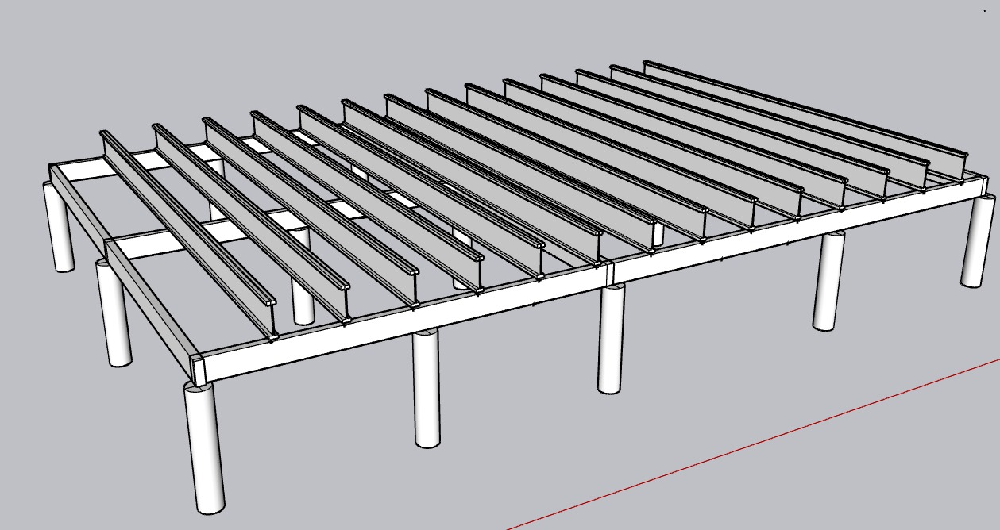
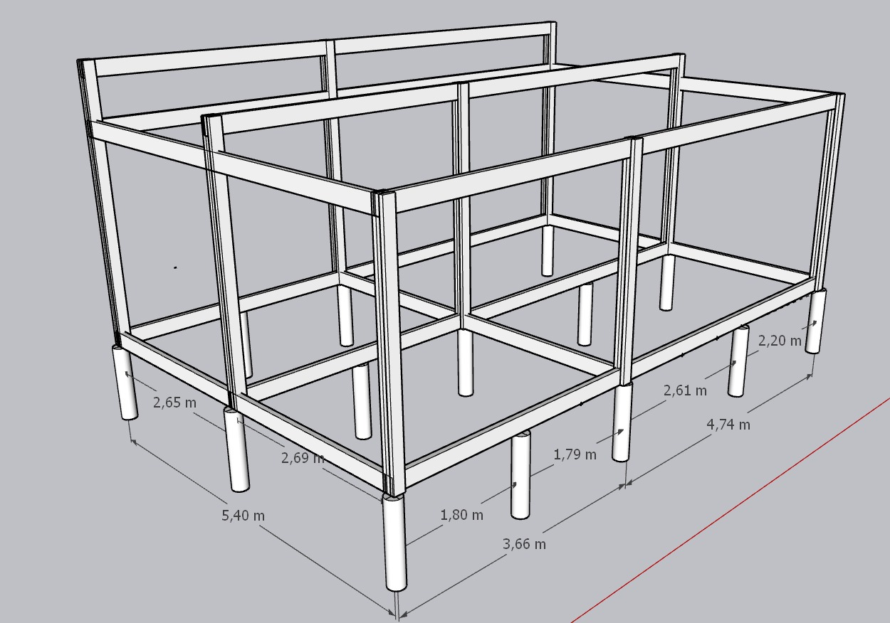
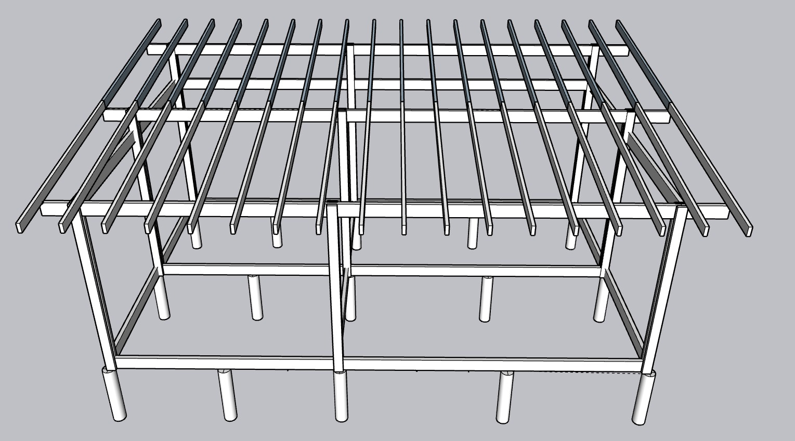

El proyecto
Casa-Refugio
Vivienda de 45,36 m² en Villa Las Rosas, Traslasierra. Un esqueleto de nueve columnas de madera sostiene el techo; las paredes de woodframe con placa cementicia cierran y aíslan sin cargar peso. La casa se eleva un metro sobre el terreno para escapar del agua de lluvia y dejar todas las instalaciones accesibles por debajo.
iCómo funciona la casa
El principio es separar quién sostiene de quién cierra. El techo lo sostienen nueve columnas dobles de 2×6" ancladas a los pilotines de hormigón, unidas arriba por tres vigas de pino que cruzan de este a oeste. Ese esqueleto se levanta y se techa primero, dejando toda la casa bajo cubierta antes de cerrar nada.
Recién después se arman las paredes de woodframe —bastidor de madera con placa cementicia exterior y aislación en la cavidad— que envuelven a las columnas. No cargan el techo: solo cierran y aíslan. Las nueve columnas quedan ocultas dentro de esos muros, y a cambio el muro le devuelve a la columna el arriostramiento que necesita en su eje débil.
Lo que resiste el viento es un tercer sistema, independiente de los otros dos: cuatro planos encadenados. Son el diafragma de techo, los muros de corte de placa OSB/fenólico (las cuatro fachadas y el tabique del dormitorio, anclados con hold-downs), el diafragma de piso y las cruces de San Andrés de la cámara bajo piso. Forman una única bajada que termina en el encadenado de fundación y de ahí en el suelo. El plano crítico es el de abajo: entre el terreno y la plataforma hay un metro sin muros, y son las cruces entre pilotines las que evitan que la casa se ladee en bloque sobre sus apoyos. Ver el sistema completo →
Sistema constructivo
Programa · 45,36 m²
◎El terreno y la orientación
Terreno Barranca Loros, Villa Las Rosas, Córdoba. Escurre al noroeste. La casa se orienta con el lado largo al norte para captar sol en invierno: las ventanas norte son la única calefacción del proyecto. El acceso es por el este; el oeste queda casi ciego para blindarse del sol de la tarde, con solo dos ventanas mínimas de ventilación en lo alto.
Implantación · orientación
▤El terreno · Lote 103
Lote 103 de la mensura de Villa Las Rosas (Barranca Loros), parcela 469028-305561. Un baldío de 2.121,28 m², largo y angosto: 25,46 m de frente sobre la calle pública al norte, y unos 82-87 m de fondo hacia el sur. Enfrente, del otro lado de la calle, hay un espacio verde triangular (posible plaza futura). La casa va a 30 m del frente, pegada al límite oeste con el retiro reglamentario de 4 m.
Tocá el plano para verlo en grande.
Lote 103 · implantación de la casa
Ubicación en Villa Las Rosas
▢Planta general
Distribución de 8,40 × 5,40. El estar-cocina es una sola pieza; dormitorio, baño y guardado sobre la crujía oeste. Las paredes divisorias del baño y del pasillo son cerramiento liviano, se levantan al final y apoyan sobre pilotines para acompañar con su peso. El tabique entre el dormitorio y el estar, en el eje x = 3,60, es la excepción: es muro de corte del sistema contra el viento y se levanta con la estructura.
Planilla de aberturas
Medidas de vano: ancho horizontal × alto. El alféizar se mide desde el piso terminado (+1,10) hasta el borde inferior del vano. Los mismos códigos rotulan la planta y las fachadas.
| Código | Fachada | Local | Ancho | Alto | Tipo | Alféizar |
|---|---|---|---|---|---|---|
| P1 · puerta de acceso | Este | Estar–cocina | 2,00 | 2,50 | de abrir · dos hojas | — (a piso) |
| P2 · puerta de servicio | Sur | Estar–cocina | 1,00 | 2,10 | de abrir · una hoja | — (a piso) |
| V1 · ventana | Norte | Dormitorio | 1,50 | 1,20 | de abrir | 1,00 |
| V2 · ventana | Norte | Estar–cocina | 1,00 | 1,20 | de abrir | 1,00 |
| V3 · paño fijo | Norte | Estar–cocina | 2,00 | 1,20 | fija | 1,00 |
| V4 · ventana | Sur | Baño | 0,50 | 0,50 | de abrir | 1,60 |
| V5 · ventana | Sur | Cocina (sobre mesada) | 2,00 | 0,50 | corrediza | 1,10 |
| V6 · ventana circular | Este | Estar–cocina | Ø 1,00 | Ø 1,00 | de abrir | 1,00 |
| V7 · ventilación | Oeste | Dormitorio (centro) | 0,20 | 0,20 | de abrir | 2,00 |
| V8 · ventilación | Oeste | Baño | 0,20 | 0,20 | de abrir | 2,00 |
Vidrio al norte: V1 + V2 + V3 = 1,80 + 1,20 + 2,40 = 5,40 m². V4 va alta para dar privacidad al baño y su dintel queda a 2,10, alineado con la puerta de servicio; V5 arranca por encima del salpicado de la mesada. En V6 el alféizar es la base del círculo. Las puertas interiores del dormitorio y el baño son de tabique y no figuran acá.
Planta · norte arriba
⛭Corte transversal A–A
Imaginá que cortás la casa con un cuchillo por la línea A–A de la planta y la mirás de perfil. Eso es este dibujo. Se ve el techo cayendo del norte (alto) al sur (bajo), las columnas paradas, las alturas por dentro y el metro de cámara ventilada por donde pasan y se reparan las instalaciones.
Corte A–A · norte a la izquierda · caída N→S
◫Vistas · las cuatro fachadas
Norte y sur se ven como rectángulos (el techo no cae hacia esos lados): el norte más alto, el sur más bajo. Este y oeste muestran el triángulo de la pendiente. Todas con la casa elevada sobre pilotines y los aleros acotados.
Fachada norte · rectángulo alto · captación solar
Fachada sur · rectángulo más bajo
Fachada este · acceso · triángulo
Fachada oeste · triángulo · ciego
◳Vista de la estructura general
Cómo se arma la estructura, paso a paso. Cuatro momentos del modelo tridimensional, en el mismo orden en que se ejecuta la obra: primero los pilotines salen del suelo, después se tiende la plataforma de piso, se paran las columnas con sus vigas y por último se cierra el plano del techo con los cabios. Cada paso apoya sobre el anterior.

Paso 1 · Pilotines
Los quince pilotines salen del terreno en grilla de cinco ejes por tres. Es lo único que toca el suelo: todo lo demás apoya acá. Ver Fundación →

Paso 2 · Plataforma de piso
Sobre las coronas se tienden las vigas este–oeste y, cruzadas, las viguetas que van de norte a sur. Queda la mesa de trabajo de toda la obra. Ver Piso →

Paso 3 · Columnas y vigas de techo
Se paran las columnas y se atan arriba con las tres vigas este–oeste. Recién acá la casa tiene su altura definitiva y aparece la pendiente. Ver Columnas →

Paso 4 · Cabios · estructura completa
Los cabios cruzan de norte a sur sobre las tres vigas y cierran el plano del faldón con sus aleros. El esqueleto queda listo para techar. Ver Techo →